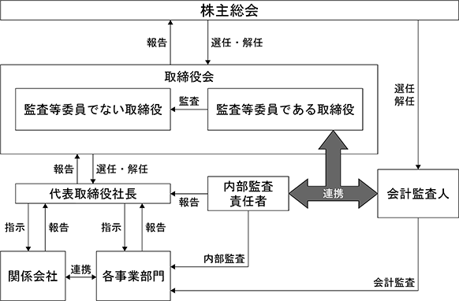

（注）提出日現在発行数には、2024年４月１日からこの有価証券報告書提出日までの新株予約権の行使により発行された株式数は、含まれておりません。
当社は、新株予約権方式によるストックオプション制度を採用しております。当該制度の内容は、以下のとおりであります。
会社法第236条、第238条及び第239条の規定に基づき、当社及び当社子会社の取締役、監査役及び従業員に対して、新株予約権を発行することを決議されたものは、以下のとおりであります。
a. 第１回新株予約権
※ 当事業年度の末日（2024年１月31日）における内容を記載しております。なお、提出日の前月末（2024年３月31日）現在において、これらの事項に変更はありません。
（注）１ 新株予約権１個につき目的となる株式数は、1,000株であります。
２ 新株予約権の割当日後、当社が株式分割、株式併合を行う場合は、次の算式により付与株式数を調整し、調整の結果生じる１株未満の端数は、これを切り捨てる。
３ 新株予約権発行後、当社が株式分割または株式併合を行う場合は、次の算式により払込額を調整し、調整により生ずる１円未満の端数は切り上げるものとする。
また、次の(ⅰ)(ⅱ)の場合は、後記の算式により払込額は調整され調整による１円未満の端数は切り上げる。
(ⅰ)時価(ただし、株式上場前においては、後記の調整式に使用する調整前払込額をいうものとする。以下同様とする。)を下回る価額をもって会社の普通株式を交付する場合(ただし、会社が発行した取得条項付株式、取得請求権付株式もしくは取得条項付新株予約権(新株予約権付社債に付されたものを含む。)の取得と引換えに交付する場合または会社の普通株式の交付を請求できる新株予約権(新株予約権付社債に付されたものを含む。)その他の証券もしくは権利の請求または行使による場合を除く。)
(ⅱ)時価を下回る価額をもって、その取得と引換えに会社の株式を交付する取得条項付株式、取得請求権付株式もしくは取得条項付新株予約権(新株予約権付社債に付されたものを含む。)を発行する場合(無償割当ての場合を含む。)、または時価を下回る価額をもって会社の株式の交付を請求できる新株予約権(新株予約権付社債に付されたものを含む。)その他の証券もしくは権利を発行する場合(無償割当ての場合を含む。)
４ 当社の合併、吸収分割、新設分割、株式交換または株式移転に伴い、当社の新株予約権の代替として株式会社により交付される新株予約権の内容
会社法第236条第１項第八号イ、ロ、ハ、ニ及びホによりそれぞれ合併、吸収分割、新設分割、株式交換、または株式移転を行う場合には、当該時点において行使されていない本新株予約権は消滅し、これに代わる合併後存続する株式会社または合併により設立する株式会社、吸収分割する株式会社がその事業に関して有する権利義務の全部または一部を承継する株式会社、新設分割により設立する株式会社、株式交換をする株式会社の発行済株式の全部を取得する株式会社、または株式移転により設立する株式会社(以下「株式会社」という。)により発行される新株予約権を本新株予約権者に交付することとする。
この場合、当該合併、吸収分割、新設分割、株式交換または株式移転に際し、当社と株式会社との間で締結される吸収・新設合併契約(会社法第749条第１項第四号イ及び第753条第１項第十号イ)、吸収分割契約(会社法第758条第五号イ)、新設分割計画(会社法第763条第十号イ)、株式交換契約(会社法第768条第１項第四号イ)または株式移転計画(会社法第773条第１項第九号イ)において株式会社が交付する下記の新株予約権の内容を定めるものとする。
ⅰ）新株予約権の目的たる株式の種類
普通株式とする。
ⅱ）新株予約権の数及び株式の数
合併、吸収分割、新設分割、株式交換または株式移転の条件等を勘案の上、合理的な調整がなされ
た新株予約権の数及び付与株式の数とする。
ⅲ）各新株予約権の行使の際の払込金額
合併、吸収分割、新設分割、株式交換または株式移転の条件等を勘案の上、１株当たりの払込金額
につき合理的な調整がなされた額に、付与株式数を乗じた額とする。
ⅳ）新株予約権の行使期間
本新株予約権の当初設定された行使期間の開始日と合併、吸収分割、新設分割、株式交換または株
式移転の日のいずれか遅い日から、本新株予約権の当初設定された行使期間の満了日までとする
が、行使期間は合理的な調整をすることができる。
ⅴ）その他の新株予約権の行使条件
上記新株予約権の行使の条件に準じて決定する。
ⅵ）新株予約権の譲渡制限
新株予約権の譲渡につき、株式会社の取締役会の承認を要するものとする。
b. 第２回新株予約権
※ 当事業年度の末日（2024年１月31日）における内容を記載しております。なお、提出日の前月末（2024年３月31日）現在において、これらの事項に変更はありません。
（注）１ 新株予約権1個につき目的となる株式数は、1,000株であります。
２ 新株予約権の割当日後、当社が株式分割、株式併合を行う場合は、次の算式により付与株式数を調整し、調整の結果生じる１株未満の端数は、これを切り捨てる。
３ 新株予約権発行後、当社が株式分割または株式併合を行う場合は、次の算式により払込額を調整し、調整により生ずる１円未満の端数は切り上げるものとする。
また、次の(ⅰ)(ⅱ)の場合は、後記の算式により払込額は調整され、調整による１円未満の端数は切り上げる。
(ⅰ)時価(ただし、株式上場前においては、後記の調整式に使用する調整前払込額をいうものとする。以下同様とする。)を下回る価額をもって会社の普通株式を交付する場合(ただし、会社が発行した取得条項付株式、取得請求権付株式もしくは取得条項付新株予約権(新株予約権付社債に付されたものを含む。)の取得と引換えに交付する場合または会社の普通株式の交付を請求できる新株予約権(新株予約権付社債に付されたものを含む。)その他の証券もしくは権利の請求または行使による場合を除く。)
(ⅱ)時価を下回る価額をもって、その取得と引換えに会社の株式を交付する取得条項付株式、取得請求権付株式もしくは取得条項付新株予約権(新株予約権付社債に付されたものを含む。)を発行する場合(無償割当ての場合を含む。)、または時価を下回る価額をもって会社の株式の交付を請求できる新株予約権(新株予約権付社債に付されたものを含む。)その他の証券もしくは権利を発行する場合(無償割当ての場合を含む。)
４ 当社の合併、吸収分割、新設分割、株式交換または株式移転に伴い、当社の新株予約権の代替として株式会社により交付される新株予約権の内容
会社法第236条第１項第八号イ、ロ、ハ、ニ及びホによりそれぞれ合併、吸収分割、新設分割、株式交換、または株式移転を行う場合には、当該時点において行使されていない本新株予約権は消滅し、これに代わる合併後存続する株式会社または合併により設立する株式会社、吸収分割する株式会社がその事業に関して有する権利義務の全部または一部を承継する株式会社、新設分割により設立する株式会社、株式交換をする株式会社の発行済株式の全部を取得する株式会社、または株式移転により設立する株式会社(以下「株式会社」という。)により発行される新株予約権を本新株予約権者に交付することとする。
この場合、当該合併、吸収分割、新設分割、株式交換または株式移転に際し、当社と株式会社との間で締結される吸収・新設合併契約(会社法第749条第１項第四号イ及び第753条第１項第十号イ)、吸収分割契約(会社法第758条第五号イ)、新設分割計画(会社法第763条第十号イ)、株式交換契約(会社法第768条第１項第四号イ)または株式移転計画(会社法第773条第１項第九号イ)において株式会社が交付する下記の新株予約権の内容を定めるものとする。
ⅰ）新株予約権の目的たる株式の種類
普通株式とする。
ⅱ）新株予約権の数及び株式の数
合併、吸収分割、新設分割、株式交換または株式移転の条件等を勘案の上、合理的な調整がなされ
た新株予約権の数及び付与株式の数とする。
ⅲ）各新株予約権の行使の際の払込金額
合併、吸収分割、新設分割、株式交換または株式移転の条件等を勘案の上、１株当たりの払込金額
につき合理的な調整がなされた額に、付与株式数を乗じた額とする。
ⅳ）新株予約権の行使期間
本新株予約権の当初設定された行使期間の開始日と合併、吸収分割、新設分割、株式交換または株
式移転の日のいずれか遅い日から、本新株予約権の当初設定された行使期間の満了日までとする
が、行使期間は合理的な調整をすることができる。
ⅴ）その他の新株予約権の行使条件
上記新株予約権の行使の条件に準じて決定する。
ⅵ）新株予約権の譲渡制限
新株予約権の譲渡につき、株式会社の取締役会の承認を要するものとする。
c. 第３回新株予約権
※ 当事業年度の末日（2024年１月31日）における内容を記載しております。なお、提出日の前月末（2024年３月31日）現在において、これらの事項に変更はありません。
（注）１ 新株予約権1個につき目的となる株式数は、200株であります。
２ 新株予約権の割当日後、当社が株式分割、株式併合を行う場合は、次の算式により付与株式数を調整し、調整の結果生じる１株未満の端数は、これを切り捨てる。
３ 新株予約権発行後、当社が株式分割または株式併合を行う場合は、次の算式により払込額を調整し、調整により生ずる１円未満の端数は切り上げるものとする。
また、次の(ⅰ)(ⅱ)の場合は、後記の算式により払込額は調整され、調整による１円未満の端数は切り上げる。
(ⅰ)時価(ただし、株式上場前においては、後記の調整式に使用する調整前払込額をいうものとする。以下同様とする。)を下回る価額をもって会社の普通株式を交付する場合(ただし、会社が発行した取得条項付株式、取得請求権付株式もしくは取得条項付新株予約権(新株予約権付社債に付されたものを含む。)の取得と引換えに交付する場合または会社の普通株式の交付を請求できる新株予約権(新株予約権付社債に付されたものを含む。)その他の証券もしくは権利の請求または行使による場合を除く。)
(ⅱ)時価を下回る価額をもって、その取得と引換えに会社の株式を交付する取得条項付株式、取得請求権付株式もしくは取得条項付新株予約権(新株予約権付社債に付されたものを含む。)を発行する場合(無償割当ての場合を含む。)、または時価を下回る価額をもって会社の株式の交付を請求できる新株予約権(新株予約権付社債に付されたものを含む。)その他の証券もしくは権利を発行する場合(無償割当ての場合を含む。)
４ 当社の合併、吸収分割、新設分割、株式交換または株式移転に伴い、当社の新株予約権の代替として株式会社により交付される新株予約権の内容
会社法第236条第１項第八号イ、ロ、ハ、ニ及びホによりそれぞれ合併、吸収分割、新設分割、株式交換、または株式移転を行う場合には、当該時点において行使されていない本新株予約権は消滅し、これに代わる合併後存続する株式会社または合併により設立する株式会社、吸収分割する株式会社がその事業に関して有する権利義務の全部または一部を承継する株式会社、新設分割により設立する株式会社、株式交換をする株式会社の発行済株式の全部を取得する株式会社、または株式移転により設立する株式会社(以下「株式会社」という。)により発行される新株予約権を本新株予約権者に交付することとする。
この場合、当該合併、吸収分割、新設分割、株式交換または株式移転に際し、当社と株式会社との間で締結される吸収・新設合併契約(会社法第749条第１項第四号イ及び第753条第１項第十号イ)、吸収分割契約(会社法第758条第五号イ)、新設分割計画(会社法第763条第十号イ)、株式交換契約(会社法第768条第１項第四号イ)または株式移転計画(会社法第773条第１項第九号イ)において株式会社が交付する下記の新株予約権の内容を定めるものとする。
ⅰ）新株予約権の目的たる株式の種類
普通株式とする。
ⅱ）新株予約権の数及び株式の数
合併、吸収分割、新設分割、株式交換または株式移転の条件等を勘案の上、合理的な調整がなされ
た新株予約権の数及び付与株式の数とする。
ⅲ）各新株予約権の行使の際の払込金額
合併、吸収分割、新設分割、株式交換または株式移転の条件等を勘案の上、１株当たりの払込金額
につき合理的な調整がなされた額に、付与株式数を乗じた額とする。
ⅳ）新株予約権の行使期間
本新株予約権の当初設定された行使期間の開始日と合併、吸収分割、新設分割、株式交換または株
式移転の日のいずれか遅い日から、本新株予約権の当初設定された行使期間の満了日までとする
が、行使期間は合理的な調整をすることができる。
ⅴ）その他の新株予約権の行使条件
上記新株予約権の行使の条件に準じて決定する。
ⅵ）新株予約権の譲渡制限
新株予約権の譲渡につき、株式会社の取締役会の承認を要するものとする。
d.第９回新株予約権（株価コミットメント型有償ストック・オプション）
※ 新株予約権証券の発行時（2022年５月31日）における内容を記載しております。
（注）１ 新株予約権の目的である株式の種類及び数
本新株予約権１個当たりの目的である株式の数（以下、「付与株式数」という。）は、当社普通株式100株とする。
なお、付与株式数は、本新株予約権の割当日後、当社が株式分割（当社普通株式の無償割当てを含む。以下同じ。）または株式併合を行う場合、次の算式により調整されるものとする。ただし、かかる調整は、本新株予約権のうち、当該時点で行使されていない新株予約権の目的である株式の数についてのみ行われ、調整の結果生じる１株未満の端数については、これを切り捨てるものとする。
調整後付与株式数＝調整前付与株式数×分割（または併合）の比率
また、本新株予約権の割当日後、当社が合併、会社分割、株式交換または株式交付を行う場合その他これらの場合に準じ付与株式数の調整を必要とする場合には、当社は、合理的な範囲で適切に付与株式数の調整を行うことができるものとする。
２ 新株予約権の行使に際して出資される財産の価額または算定方法
本新株予約権の行使に際して出資される財産の価額は、１株あたりの払込金額（以下、「行使価額」という。）に、付与株式数を乗じた金額とする。
行使価額は、本新株予約権の割当日の終値（取引が成立していない場合はそれに先立つ直近取引日の終値）とする。
なお、本新株予約権の割当日後、当社が株式分割または株式併合を行う場合、次の算式により行使価額を調整し、調整による１円未満の端数は切り上げる。
また、本新株予約権の割当日後、当社が当社普通株式につき時価を下回る価額で新株の発行または自己株式の処分を行う場合（新株予約権の行使に基づく新株の発行及び自己株式の処分または合併、会社分割、株式交換及び株式交付による新株の発行及び自己株式の交付の場合を除く。）、次の算式により行使価額を調整し、調整による１円未満の端数は切り上げる。
なお、上記算式において「既発行株式数」とは、当社普通株式にかかる発行済株式総数から当社普通株式にかかる自己株式数を控除した数とし、また、当社普通株式にかかる自己株式の処分を行う場合には、「新規発行株式数」を「処分する自己株式数」に読み替えるものとする。
さらに、上記のほか、本新株予約権の割当日後、当社が合併、会社分割、株式交換もしくは株式交付を行う場合、その他これらの場合に準じて行使価額の調整を必要とする場合には、当社は、合理的な範囲で適切に行使価額の調整を行うことができるものとする。
３ 増加する資本金及び資本準備金に関する事項
① 本新株予約権の行使により株式を発行する場合における増加する資本金の額は、会社計算規則第17条第１項に従い算出される資本金等増加限度額の２分の１の金額とする。計算の結果１円未満の端数が生じたときは、その端数を切り上げるものとする。
② 本新株予約権の行使により株式を発行する場合における増加する資本準備金の額は、上記①記載の資本金等増加限度額から、上記①に定める増加する資本金の額を減じた額とする。
４ 新株予約権の行使の条件
① 割当日から本新株予約権の行使期間の終期に至るまでの間に金融商品取引所における当社普通株式の普通取引終値が一度でも行使価額に50％を乗じた価格を下回った場合、新株予約権者は残存するすべての本新株予約権を行使期間の満期日までに行使しなければならないものとする。但し、次に掲げる場合に該当するときはこの限りではない。
(a)当社の開示情報に重大な虚偽が含まれることが判明した場合
(b)当社が法令や金融商品取引所の規則に従って開示すべき重要な事実を適正に開示していなかったことが判明した場合
(c)当社が上場廃止となったり、倒産したり、その他本新株予約権発行日において前提とされていた事情に大きな変更が生じた場合
(d)その他、当社が新株予約権者の信頼を著しく害すると客観的に認められる行為をなした場合
② 新株予約権者の相続人による本新株予約権の行使は認めない。
③ 本新株予約権の行使によって、当社の発行済株式総数が当該時点における発行可能株式総数を超過することとなるときは、当該本新株予約権の行使を行うことはできない。
④ 各本新株予約権１個未満の行使を行うことはできない。
５ 新株予約権の取得に関する事項
当社が消滅会社となる合併契約、当社が分割会社となる会社分割についての分割契約もしくは分割計画、または当社が完全子会社となる株式交換契約、株式交付計画もしくは株式移転計画について株主総会の承認（株主総会の承認を要しない場合には取締役会決議）がなされた場合は、当社は、当社取締役会が別途定める日の到来をもって、本新株予約権の全部を無償で取得することができる。
６ 組織再編行為の際の新株予約権の取扱い
当社が、合併（当社が合併により消滅する場合に限る。）、吸収分割、新設分割、株式交換または株式移転（以上を総称して以下、「組織再編行為」という。）を行う場合において、組織再編行為の効力発生日に新株予約権者に対し、それぞれの場合につき、会社法第236条第１項第８号イからホまでに掲げる株式会社（以下、「再編対象会社」という。）の新株予約権を以下の条件に基づきそれぞれ交付することとする。ただし、以下の条件に沿って再編対象会社の新株予約権を交付する旨を、吸収合併契約、新設合併契約、吸収分割契約、新設分割計画、株式交換契約または株式移転計画において定めた場合に限るものとする。
① 交付する再編対象会社の新株予約権の数
新株予約権者が保有する新株予約権の数と同一の数をそれぞれ交付する。
② 新株予約権の目的である再編対象会社の株式の種類
再編対象会社の普通株式とする。
③ 新株予約権の目的である再編対象会社の株式の数
組織再編行為の条件を勘案のうえ、上記１に準じて決定する。
④ 新株予約権の行使に際して出資される財産の価額
交付される各新株予約権の行使に際して出資される財産の価額は、組織再編行為の条件等を勘案のうえ、上記２で定められる行使価額を調整して得られる再編後行使価額に、上記５（３）に従って決定される当該新株予約権の目的である再編対象会社の株式の数を乗じた額とする。
⑤ 新株予約権を行使することができる期間
新株予約権の行使期間の初日と組織再編行為の効力発生日のうち、いずれか遅い日から行使期間の末日までとする。
⑥ 新株予約権の行使により株式を発行する場合における増加する資本金及び資本準備金に関する事項
上記３に準じて決定する。
⑦ 譲渡による新株予約権の取得の制限
譲渡による取得の制限については、再編対象会社の取締役会の決議による承認を要するものとする。
⑧ その他新株予約権の行使の条件
（注）４に準じて決定する。
⑨ 新株予約権の取得事由及び条件
（注）５に準じて決定する。
⑩ その他の条件については、再編対象会社の条件に準じて決定する。
該当事項はありません。
③ 【その他の新株予約権等の状況】
該当事項ありません。
該当事項はありません。
(注)１ 新株予約権（ストック・オプション）の権利行使によるものであります。
２ 行使価額修正条項付第５回新株予約権による増資
割当先 みずほ証券株式会社
３ 行使価額修正条項付第６回新株予約権による増資
割当先 株式会社SBI証券
４ 行使価額修正条項付第７回新株予約権による増資
割当先 マッコーリー・バンク・リミテッド
５ 行使価額修正条項付第８回新株予約権による増資
割当先 マッコーリー・バンク・リミテッド
６ 海外募集による株式発行による増資
７ 当事業年度の末日（2024年１月31日）における内容を記載しております。
なお、2024年４月１日からこの有価証券報告書提出日までの新株予約権の行使による発行済株式総数、
資本金及び資本準備金の増減は含まれておりません。
2024年１月31日現在
(注) 自己株式 300,375株は「個人その他」に 3,003単元、「単元未満株式の状況」に 75株含まれております。
2024年１月31日現在
(注)１ 発行済株式（自己株式を除く。）の総数に対する所有株式数の割合は小数点第２位未満を四捨五入して表示
しております。
２ 上記の所有株式数のうち、信託業務に係る株式数は次のとおりであります。
日本マスタートラスト信託銀行株式会社(信託口) 924,700株
３ 上記の所有株式の他、2024年２月29日現在の役員持株会での持分として、崔 元根氏が49,339株を所有しております。
2024年１月31日現在
(注) 単元未満株式には、当社所有の自己株式75株が含まれております。
2024年１月31日現在
【株式の種類等】会社法155条第３号及び会社法第155条第７号による普通株式の取得
(1) 【株主総会決議による取得の状況】
該当事項はありません。
(2) 【取締役会決議による取得の状況】
会社法155条第３号による普通株式の取得
(3) 【株主総会決議又は取締役会決議に基づかないものの内容】
会社法第155条第７号による普通株式の取得
（注）当期間における保有自己株式数には、2024年4月1日から有価証券報告書提出日までの単元未満株式の買取による株式数は含めておりません。
(4) 【取得自己株式の処理状況及び保有状況】
(注) 当期間における保有自己株式数には、2024年４月１日から有価証券報告書提出日までの単元未満株式の買取りによる株式数は含まれておりません。
当社は、株主の皆様への利益還元を重要な経営課題と認識しており、将来の持続的な成長に必要な内部留保を確保しつつ、財政状態及び経営成績並びに経営全般を総合的に勘案し、利益配当を行うことを基本方針としております。
なお、剰余金の配当を行う場合は、年１回期末での配当を考えており、配当の決定機関は株主総会であります。また、当社は、取締役会の決議により、毎年７月31日を基準日として中間配当を行うことができる旨を定款に定めておりますが、事業年度変更の経過期間となる第19期の中間配当については、2023年６月30日を基準日としております。
なお、基準日が当事業年度に属する剰余金の配当は、無配としております。
① コーポレートガバナンスに関する基本的な考え方
当社は、企業活動を支える様々なステークホルダーの利益を重視しており、株主を始めとするステークホルダーにとっての企業価値を極大化し、かつ、継続的に高めていく上でコーポレート・ガバナンスの充実は重要であると考えています。当社の資本は、独立した複数株主の出資により構成されております。そのため、コーポレート・ガバナンスに対する意識は以前から強く、経営の透明性、企業倫理の向上を図るべく、以下の体制整備、内部統制を実施しております。
また当社は、今後もコーポレート・ガバナンス経営の重要性を深く認識し、その時点で当社に最もふさわしいコーポレート・ガバナンス経営体制を検討し、継続的に整備・構築していく所存であります。
② 企業統治の体制の概要及び当該体制を採用する理由
当社は監査等委員会設置会社として、常勤の監査等委員を議長とする監査等委員３名（３名全員が社外取締役）で構成された監査等委員会により、取締役の職務の執行および取締役会の決議の適法性、妥当性の監視・監督及び監査を行っています。監査等委員会は、原則として月１回の監査等委員会を開催するほか、必要に応じて監査等委員間の協議を行い意見交換しております。また、取締役会以外の重要な会議への出席を行い必要に応じて意見を述べるほか、監査等委員でない取締役との面談、会社財産及び重要書類の閲覧による業務の調査を通じて、監査等委員でない取締役の職務遂行を監視する体制を整えております。
また、会計監査人及び内部監査部門とは、それぞれの監査の計画、進捗及び結果について、定期的に相互に情報及び意見の交換を行う等の連携を図っております。
また、取締役会は代表取締役社長を議長とする取締役７名（うち、社外取締役は４名）で構成され、取締役会は経営の基本方針、法令で定められた事項及びその他経営に関する重要事項を決定しており、原則として月１回の定時取締役会を開催し、必要に応じて臨時取締役会を適宜開催しております。特に迅速な決定等が必要な場合においては、テレビ会議システムなどを利用した臨時の取締役会を開催し、機動的な審議と意思決定が行われるようにしています。この体制によって高い透明性と経営環境の変化に迅速に対応できる組織体制を確保しています。
なお、当社の取締役会は、７名の取締役うち４名の取締役が独立性を確保されている社外取締役であることから、報酬委員会、指名委員会等の委員会を設置していません。
当社の企業統治の体制の模式図は、以下のとおりであります。

③ 企業統治に関するその他の事項
1)内部統制システムの整備の状況
当社の内部統制システムの整備に関する基本方針につきましては、以下の内容のとおり取締役会において決議しております。
(取締役及び使用人の職務の執行が法令及び定款に適合することを確保するための体制)
1.企業が存立を継続するためにはコンプライアンスの徹底が必要不可欠であり、当社の役職員が法令及び定款を 遵守し、高い倫理観に基づいて行動をとるために経営理念及びコンプライアンス規程を定める。代表取締役社長は繰り返しその精神を役職員に伝えることにより、法令遵守及び社会倫理の遵守をあらゆる企業活動の前提とすることを徹底する。
2.コンプライアンス担当役員は、コンプライアンスに関する統括責任者として全社横断的なコンプライアンス体制の整備及び問題点の把握に努める。
3.コンプライアンス上の問題が発生した場合には、重大性に応じて、代表取締役または取締役会が再発防止策を決定し、全社的にその内容を周知徹底する。
4.役職員は他の役職員の法令違反行為を知った時は、速やかに管理部門に報告しなければならない。
5.役職員の法令・定款違反行為については、コンプライアンス規程に基づき処分を決定する。
(取締役の職務の執行に係る情報の保存及び管理に関する体制)
取締役の職務の執行に係る情報については、「文書管理規程」等の諸規程に従い、文書または電磁的媒体に記録・保存し、適切かつ確実に管理する。取締役は、常時これらの文書等を閲覧できるものとする。
(損失の危険の管理に関する規程その他の体制)
1.当社のリスク管理を体系的に定めるリスク管理規程を定め、同規程に基づくリスク管理体制の構築・運用を行う。
2.管理部門において当社グループ全体のリスクを網羅的・総括的に管理し、内部監査責任者は各組織のリスク管理状況を監査し、その結果を代表取締役に報告する。
(取締役の職務の執行が効率的に行われることを確保するための体制)
意思決定の機動性を高め、効率的な業務執行を行い、その実効性を向上させるため、以下の事項を定める。
1.取締役の職務の執行が効率的に行われることを確保するため、取締役会の運営に関する規程を定めるとともに、取締役会を原則として月１回開催するほか、必要に応じて適宜臨時に開催する。
2.取締役会は、取締役会規則、職務権限規程、業務分掌規程及び稟議書管理規程等を定め、業務執行の責任体制と業務プロセスを明確にすることにより、取締役会の決定に基づく業務執行の迅速かつ効率的な処理が行える体制を構築する。
3.内部監査責任者は、事業活動の効率性及び有効性について監査を行う。内部監査責任者及び監査を受けた部署は、是正、改善の必要があるときには、連携してその対策を講ずる。
(当社及び子会社からなる企業集団における業務の適正を確保するための体制)
1.子会社は、当社との連携・情報共有を保ちつつ、自社の規模、事業内容、その他会社の特徴を踏まえ、内部統制システムを整備する。
2.「関係会社管理規程」に基づき、関係会社の状況に応じて必要な管理を行う。
3.取締役は当社及び関係会社の取締役の職務執行を監視・監督し、監査等委員会は当社及び関係会社の業務執行状況を監査する。
(監査等委員がその補助すべき使用人を置くことを求めた場合における当該使用人に関する事項)
監査等委員は、管理部門の従業員に監査業務に必要な補助を求めることができるものとし、監査等委員より監査業務に必要な補助を求められた従業員はその命令に関して、取締役の指揮命令を受けないものとする。
(前号の使用人の取締役からの独立性に関する事項)
監査等委員より監査業務に必要な補助を求められた従業員の人事異動、人事評価、懲戒に関しては、事前に監査等委員に相談し、意見を求め、同意を得るものとする。
(取締役及び使用人が監査等委員に報告するための体制)
取締役は取締役会等の重要な会議において、職務執行の状況等について定期的に報告を行う。また、取締役又は使用人は監査等委員に対して法定の事項に加えて、当社に重大な影響を及ぼす事項の発生又は発生する恐れが認められた場合には、速やかに監査等委員に報告するものとする。
(その他監査等委員の監査が実効的に行われることを確保するための体制)
役職員の監査等委員会監査に対する理解を深め、監査等委員会の環境を整備するよう努める。
監査等委員は、取締役会議事録等の業務執行にかかわる記録及び、稟議書等すべての重要な決裁書類を常に確認できることとする。
また、会計監査人及び内部監査担当者との間で情報交換に努め、連携して当社の監査の実効性を確保する。
(反社会的勢力排除に向けた体制)
社会の秩序や企業の健全な活動に脅威を与える反社会的勢力とは、組織全体として毅然とした態度で対応し、一切の関係を持たない体制を整備する。
2)リスク管理体制の整備の状況
内部統制については、統制組織及び統制手段が相互に結びつき内部牽制が作用する仕組づくりを推進しております。内部統制の推進にあたり、会社財産の適正な保全・管理、会計記録の正確な作成・保管、信頼性のある財務報告を含む事業報告、経営者の定めた方針・規定・内規遵守及び関連法規の遵守といったこれらの内容が適切に遂行されているか、開発活動、生産活動、営業活動を通して内部統制の整備に努めております。
特に連結子会社W-SCOPE KOREA CO.,LTD.及びW-SCOPE CHUNGJU CO., LTD.では、ISO14001/45001及びIRTF16949認証を受け、引き続き生産活動での法令諸規則等の遵守の徹底を図り、社内規程・内規等の整備を図っております。
また、特許権につきましては外部特許事務所と連携し、新製品開発・改良に対する業務実施に際しての適正な管理等を行っております。
3)取締役に関する事項
(取締役の定数)
当社の取締役の定数は14名以内（監査等委員でない取締役９名、監査等委員である取締役５名）とする旨を、定款に定めております。
(取締役の選任の決議要件)
当社は、取締役の選任決議について、議決権を行使することができる株主の議決権の３分の１以上を有する株主が出席し、その議決権の過半数をもって行う旨及び累積投票によらない旨を定款に定めております。
（取締役の任期）
監査等委員でない取締役の任期は選任後１年以内に終了する事業年度のうち最終のものに関する定時株主総会終結の時までとし、監査等委員である取締役の任期は、選任後２年以内に終了する事業年度のうち最終のものに関する定時株主総会終結の時までと定款で定めています。
（役員等賠償責任保険契約の概要）
当社は、会社法第430条の３第１項に定める役員等賠償責任保険契約を保険会社との間で締結し、被保険者が法律上負担すべき損害賠償金及び訴訟費用、弁護士報酬等の訴訟費用を当該保険契約により補填することとしています。当該保険契約の被保険者は、当社及び子会社の取締役、子会社の監査役及び執行役員等であります。また、被保険者の職務執行の適正性が損なわれないようにするための措置として、当該保険契約に免責金額を設け、一定額に至らない損害については補填の対象としないこととしているなど、一定の免責事由を設けております。
4)株主総会に関する事項
(株主総会の特別決議要件)
当社は、会社法第309条第２項の定めによる決議は、定款に別段の定めがある場合を除き、議決権を行使することができる株主の議決権の３分の１以上を有する株主が出席し、その議決権の３分の２以上をもって行う旨定款に定めております。これは、株主総会における特別決議の定足数を緩和することにより、株主総会の円滑な運営を行うことを目的とするものであります。
(取締役の責任免除)
当社定款において、社外取締役は、会社法第427条第１項の規定に基づき、同法第423条第１項の責任について、善意かつ重過失がないときは、一定の限度を設ける契約を締結することができる旨を定めており、当社は社外取締役全員との間で責任限定契約を締結しております。なお、当該契約に基づく責任の限度額は、５百万円以上であらかじめ定めた金額又は法令が規定する額のいずれか高い額としています。
(中間配当の定め)
当社は、株主への機動的な利益還元を行うため、株主総会決議に基づく剰余金の配当に加え、取締役会決議により毎年７月31日を基準日として、会社法第454条第５項に定める剰余金の配当(中間配当)ができる旨定款に定めております。なお、2024年1月期の事業年度は事業年度変更による変則決算となり、2023年6月30日を中間配当の基準日としました。
(自己株式の取得)
当社は、自己の株式の取得について、経営環境の変化に対応した機動的な資本政策の遂行を可能とするため、会社法第165条第２項の規定に基づき、取締役会の決議によって市場取引等により自己株式を取得することができる旨、定款に定めております。
④ 取締役会の活動状況
当事業年度において当社は、定時取締役会を毎月1回のペースで開催し、その他に必要に応じて臨時取締役会を年間6回開催しました。個々の取締役の出席状況については次のとおりであります。
また、取締役会での具体的な検討内容としては、業界の状況やそれに伴う事業進捗及び対応策、今後の新規設備投資計画や生産効率改善計画、そのための資金計画の他、当社グループの組織編成やESG経営に対する方針・計画とそれに伴う子会社での委員会設置及び新規事業に関する進捗状況と今後の方針などが行われています。
① 役員一覧
男性
(注) １ 取締役 李俊範氏は、社外取締役であります。
２ 取締役 須山敦子氏、龍田有理氏、増田庸司氏の３名は、監査等委員である社外取締役であります。
３ 監査等委員でない取締役の任期は、2024年1月期に係る定時株主総会終結の時から、2025年1月期に係る定時株主総会終結の時までであります。
４ 監査等委員である取締役の任期は、2024年1月期に係る定時株主総会終結の時から、2026年1月期に係る定時株主総会終結の時までであります。
５ 所有株式数は普通株式であり、2024年２月29日現在の所有株式数であります。
② 社外役員の状況
当社は、監査等委員でない社外取締役を１名、監査等委員である社外取締役を３名選任し、独立した立場から取締役会の牽制及び監視を行っております。また、監査等委員会は内部監担当者及び会計監査人との意見交換等により相互の連携を図りながら、適正かつ効率的な監査実施のための環境整備を行っております。
監査等委員でない社外取締役の李俊範氏と監査等委員である社外取締役の須山敦子氏及び龍田有理氏は、ともに公認会計士の資格を有し、財務・会計での高度な知見と、それぞれ異なった専門分野での経歴を有しております。また、監査等委員である社外取締役の増田庸司氏は弁護士の資格を有し、法律専門家としての専門的で高度な知見と企業法務の実務経験を有しております。これら４名の社外取締役は、取締役会において様々な局面において、専門家としても適切な助言、提言を行っております。
なお、当社は、社外取締役を選任するにあたり、一般株主と利益相反が生じるおそれがないことを基本的な方針としております。
監査等委員である社外取締役の須山敦子氏、龍田有理氏及び増田庸司氏は、当社との人的関係、資本的関係及び取引関係その他の利害関係はありません。また、社外取締役である李俊範氏は役員持株会を通じて当社株式を7,577株、上場以前に発行されたストックオプション2,000株を保有しておりますが、その他の人的関係、資本的関係及び取引関係はありません。
(3) 【監査の状況】
① 監査等委員会監査の状況
監査等委員会は、監査等委員である社外取締役３名で構成されております。監査等委員は、原則として月１回の監査等委員会を開催するほか、必要に応じて臨時で監査等委員会を開催しております。また、取締役会への出席、その他の重要な会議への出席を行い必要に応じて意見を述べています。また、当社の各部門長からのヒアリングや会社財産及び重要書類の閲覧による業務監査、子会社の往査を通じて、子会社監査役との情報交換や資料提供、子会社各部門責任者に直接ヒアリングを行うことで、監査の実効性を確保し、取締役の職務遂行を監視しております。
また、会計監査人及び内部監査部門とそれぞれの監査の計画、進捗及び結果について定期的に相互に情報及び意見の交換を行う等の連携を図っております。
新任の監査等委員である須山敦子氏は、公認会計士の資格を有し、金融機関での決算業務や予算管理の実務経験があり、龍田有理氏は公認会計士の資格を有し財務・会計に関する相当程度の知見を有しており、増田庸司氏は弁護士の資格を有し、企業法務に関する相当程度の知見を有しております。
監査等委員会における主な検討事項として、監査方針および監査計画の策定、監査報告書の作成、会計監査人の不再任に関する事項、定時株主総会への付議議案内容の監査等を行いました。
また、常勤の監査等委員の活動として、内部監査部門との連携、子会社監査、取締役会など重要な社内会議への出席等を行っています。なお、2023年1月1日から2024年1月31日までの監査等委員会の開催状況と、各監査等委員の出席状況は次のとおりであります。
（注）小林藤雄氏は、2024年1月期に係る定時株主総会終結をもって退任いたしました。
② 内部監査の状況
当社は、会社の資産の保全のため、また、業務の適正な執行状況を確認するため、内部監査制度を導入しています。当社は会社規模が比較的小さく、内部統制の担当人員に限りがあることから、監査、報告の独立性を確保した上で、担当、責任者を兼務させております。内部監査に関する基本事項を内部監査規程に定め、内部監査人は監査等委員及び会計監査人との連携のもと、内部統制の状況等について意見交換を行いながら監査を実施しております。具体的には、部門相互監査を行うため、管理部門の管理職が兼務する内部監査責任者及び内部監査担当者が管理部門以外の部門の監査を担当し、管理部門以外の部門の管理職が兼務する別の内部監査責任者及び内部監査担当者が管理部門の監査を担当して各部署及び子会社に対し年間計画に基づいて監査等を実施し、必要な場合に改善を促し、フォローアップを行うことにより社内における不正行為の未然防止に努めております。また、内部監査結果については、代表取締役への報告のほか、年度決算の一環として取締役会に報告することとしています。
③ 会計監査の状況
a. 監査法人の名称
Mazars有限責任監査法人
b. 継続監査期間
2022年以降
c. 業務を執行した公認会計士
(注) 継続監査年数については、全員７年以内であるため、記載を省略しております。
d. 監査業務に係る補助者の構成
公認会計士６名
その他８名
e. 監査法人の選定方針と理由
会計監査人の選定にあたっては、監査等委員会が会計監査人の品質管理体制・独立性などを総合的に検討し選定する方針です。再任にあたっても、監査等委員会が同様の基準で評価し判断しています。
また、会計監査人が会社法第340条第1項各号に定める項目に該当すると認められる場合は、監査等委員会の同意に基づき、会計監査人を解任致します。この場合、監査等委員会は、解任後最初に招集される株主総会において、会計監査人を解任した旨とその理由を報告いたします。
以上の方針に基づき検討の結果、当事業年度においてMazars有限責任監査法人の再任は妥当であると判断いたしました。
f. 監査等委員会による監査法人の評価
監査等委員会は、当社の財務経理部門、内部監査部門及び会計監査人から、会計監査人の独立性・監査体制・監査の実施状況や品質等に関する情報を収集し、会計監査人の監査の方法と結果を相当と認めました。また、監査等委員会は、会計監査人の選方針などに基づき、引き続き適正な監査を期待できると評価し、当事業年度においてMazars有限責任監査法人を再任することが適当であると判断いたしました。
g. 監査法人の異動
当社の会計監査人は以下のとおり異動しております。
第17期（自 2021年１月１日 至 2021年12月31日）（連結・個別）有限責任あずさ監査法人
第18期（自 2022年１月１日 至 2022年12月31日）（連結・個別）Mazars有限責任監査法人
なお、臨時報告書に記載した事項は次のとおりであります。
（１）当該異動に係る監査公認会計士等の名称
①選任する監査公認会計士等の名称
Mazars有限責任監査法人
②退任する監査公認会計士等の名称
有限責任あずさ監査法人
（２）異動の年月日 2022年３月30日
（３）退任する監査公認会計士等が監査公認会計等となった年月日
2009年以降
なお、上記以前の期間については調査が著しく困難であったため、実際の継続監査期間は上記以前も遡る可能性があります。
（４）退任する監査公認会計士が直近３年間に作成した監査報告書等における意見等に関する事項
該当事項はありません。
（５）当該異動の決定又は当該異動に至った理由及び経緯
当社の現任会計監査人であります有限責任 あずさ監査法人は、2022年３月開催の第17期定時株主総会終結の時をもって任期満了になりました。監査法人をめぐる環境が厳しい中、監査工数が増加する傾向にあるとして、契約更新の辞退の申し出がありました。これを受け、当社といたしましても、当社の規模に適した監査費用の相当性を考慮し、複数の監査法人と協議を行い、会計監査人としての専門性、独立性、適切性及び監査品質体制を具備し、強固な海外ネットワークに基づくグローバル対応能力も高く、新たな視点での監査や当社の事業規模や近年の経営環境等を踏まえた効果的かつ効率的な監査業務の運営が期待できると総合的に判断したため、Mazars有限責任監査法人を新たに会計監査人として選任することといたしました。
（６）上記（５）の理由及び経緯に対する意見
①退任する監査公認会計士等の意見
特段の意見はない旨の回答を得ております。
②監査役会の意見
監査役会の検討経緯と結果に則った内容であり、妥当であると判断しております。
(注) 前連結会計年度に係る監査証明業務に基づく報酬以外に、前々連結会計年度、前連結会計年度に係る修正開示の報酬として前連結会計年度中に支出した額が、5百万円あります。
前連結会計年度
該当事項はありません。
当連結会計年度
該当事項はありません。
c.その他の重要な監査証明業務に基づく報酬の内容
前連結会計年度
当社の一部の連結子会社は、KPMGに対して、監査証明業務に基づく報酬64百万円及び非監査証明業務である税務等に関するアドバイザリーの報酬10百万円を支払っております。
当連結会計年度
当社の一部の連結子会社は、KPMGに対して、監査証明業務に基づく報酬74百万円及び非監査証明業務である税務等に関するアドバイザリーの報酬5百万円を支払っております。
d.監査報酬の決定方針
当社の監査公認会計士等に対する監査報酬の決定方針としましては、会計監査人より提示された監査に要する業務時間等を基準として報酬額を決定しております。
e.監査等委員会が会計監査人の報酬等に同意した理由
監査等委員会は、会計監査人の監査結果の内容、会計監査の職務執行状況及び報酬見積もりの算定根拠等について、その適正性・妥当性を検討した結果、同意の判断を致しました。
(4) 【役員の報酬等】
① 役員の報酬等の額又はその算定方法の決定に関する方針に係る事項
取締役の報酬の決定については、2022年３月30日開催の株主総会で総枠の決議を得ております。各事業年度の各監査等委員でない取締役の額については、取締役会より一任された代表取締役崔元根が、役割・貢献度合い・業績等を勘案のうえ決定しております。監査等委員である取締役については、監査等委員の協議により決定しております。
なお、当社では、2021年５月13日開催の取締役会において、監査等委員でない取締役の個人別の報酬等の内容にかかる決定方針を決議しており、当該取締役の個人別の報酬等の内容にかかる決定方針の内容は次のとおりとし、2022年12月期から実施しております。
a. 基本方針
1) 当社の取締役の報酬は、優秀な人材の確保と維持、業績向上のインセンティブの観点から、それぞれの職責に見合った報酬の体系、水準としております。
2) 報酬の体系、水準については、経営機能の変化、他社の水準等の外部データ等を勘案し、その妥当性を検証しております。
3) 社外取締役の報酬については、その職務に鑑み、基本報酬のみを支給するものとしております。
b．基本報酬の個人別の報酬等の額の決定に関する方針
当社の取締役の基本報酬は、月例の固定報酬と業績連動報酬で構成し、役職、職責、在任年数に応じて他社水準、当社業績、従業員給与の水準等を考慮しながら、総合的に勘案して決定しております。
c．業績連動報酬等ならびに非金銭報酬等の内容および額または数の算定方法の決定に関する方針
業績連動報酬等は、事業年度ごとの業績向上に対する意識を高めるため、業績指標である営業利益の達成度に応じ、月例の固定報酬に加算し支給するものとしています。非金銭報酬等は、中長期的な企業価値向上を目的としてストックオプションを採用しており、中長期計画の達成度、当社グループの経営状況等を勘案し支給するものとしております。
d. 基本報酬の額、業績連動報酬等または非金銭報酬等の額の取締役の個人別の報酬等の額に対する割合の決定に関する方針
業務執行取締役の種類別の報酬割合については、当社と同程度の事業規模や関連する業種・業態に属する企業の報酬水準を踏まえ、役位別に決定しております。
e. 取締役の個人別の報酬等の内容についての決定に関する事項
個人別の報酬額については、取締役会決議に基づき代表取締役社長がその具体的内容の決定について委任を受けるものとしています。その権限の内容は、株主総会で決議された取締役報酬限度額の範囲内において各取締役の基本報酬額を決定するものとしております。
② 役員区分ごとの報酬等の総額、報酬等の種類別の総額及び対象となる役員の員数
(注)１．報酬額は、2023年１月１日からの2024年１月31日までの13か月間で集計しています。
２．取締役１名は当社から報酬を支給しておりません。
③ 役員区分ごとの連結報酬等の総額等
連結報酬等の総額が１億円以上である者が存在しないため、記載しておりません。
④ 使用人兼務役員の使用人給与
該当事項はありません。
(5) 【株式の保有状況】
該当事項はありません。